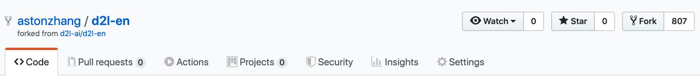
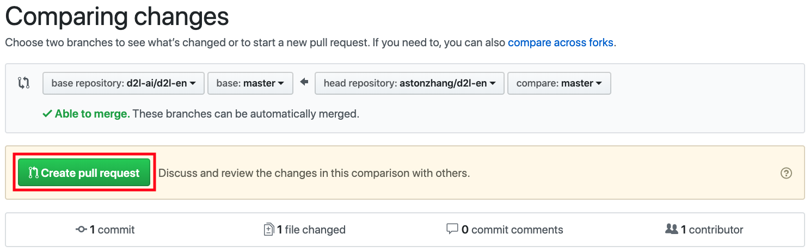

为本书做贡献
:label:sec_how_to_contribute
读者们的投稿大大帮助我们改进了本书的质量。 如果你发现笔误、无效的链接、一些你认为我们遗漏了引文的地方， 代码看起来不优雅，或者解释不清楚的地方，请回复我们以帮助读者。 在常规书籍中，两次印刷之间的间隔（即修订笔误的间隔）常常需要几年， 但这本书的改进通常需要几小时到几天的时间。 由于版本控制和持续自动集成（CI）测试，这一切颇为高效。 为此，你需要向gihub存储库提交一个 pull request。 当你的pull请求被作者合并到代码库中时， 你将成为贡献者。
提交微小更改
最常见的贡献是编辑一句话或修正笔误。 我们建议你在GitHub存储库 中查找源文件，以定位源文件（一个markdown文件）。 然后单击右上角的“Edit this file”按钮，在markdown文件中进行更改。
 :width:
:width:300px
:label:fig_edit_file
完成后，在页面底部的“Propose file change”（“提交文件修改”）
面板中填写更改说明，然后单击“Propose file change”按钮。
它会重定向到新页面以查看你的更改（ :numref:fig_git_createpr）。
如果一切正常，你可以通过点击“Create pull request”按钮提交pull请求。
大量文本或代码修改
如果你计划修改大量文本或代码，那么你需要更多地了解本书使用的格式。 源文件基于markdown格式， 并通过d2lbook包提供了一组扩展， 例如引用公式、图像、章节和引文。 你可以使用任何markdown编辑器打开这些文件并进行更改。
如果你想要更改代码，我们建议你使用Jupyter Notebook打开这些标记文件，
如 :numref:sec_jupyter中所述。
这样你就可以运行并测试你的更改。
请记住在提交更改之前清除所有输出，我们的CI系统将执行你更新的部分以生成输出。
某些部分可能支持多个框架实现。如果你添加的新代码块不是使用mxnet，
请使用#@tab来标记代码块的起始行。
例如#@tab pytorch用于一个PyTorch代码块，
#@tab tensorflow用于一个TensorFlow代码块，
#@tab paddle用于一个PaddlePaddle代码块，
或者#@tab all是所有实现的共享代码块。
你可以参考d2lbook包了解更多信息。
提交主要更改
我们建议你使用标准的Git流程提交大量修改。
简而言之，该过程的工作方式如 :numref:fig_contribute中所述。
 :label:
:label:fig_contribute
我们将向你详细介绍这些步骤。 如果你已经熟悉Git，可以跳过本部分。 在介绍时，我们假设贡献者的用户名为“astonzhang”。
安装Git
Git开源书籍描述了如何安装git。
这通常通过Ubuntu Linux上的apt install git，
在MacOS上安装Xcode开发人员工具或使用gihub的
桌面客户端来实现。
如果你没有GitHub帐户，则需要注册一个帐户。
登录GitHub
在浏览器中输入本书代码存储库的地址。
单击 :numref:fig_git_fork右上角红色框中的Fork按钮，以复制本书的存储库。
这将是你的副本，你可以随心所欲地更改它。
 :width:
:width:700px
:label:fig_git_fork
现在，本书的代码库将被分叉（即复制）到你的用户名，
例如astonzhang/d2l-en显示在 :numref:fig_git_forked的左上角。

:width:700px
:label:fig_git_forked
克隆存储库
要克隆存储库（即制作本地副本），我们需要获取其存储库地址。
点击 :numref:fig_git_clone中的绿色按钮显示此信息。
如果你决定将此分支保留更长时间，请确保你的本地副本与主存储库保持最新。
现在，只需按照 :ref:chap_installation中的说明开始。
主要区别在于，你现在下载的是你自己的存储库分支。
:width:700px
:label:fig_git_clone
# 将your_github_username替换为你的github用户名
git clone https://github.com/your_github_username/d2l-en.git
编辑和推送
现在是编辑这本书的时候了。最好按照 :numref:sec_jupyter中的说明在Jupyter Notebook中编辑它。进行更改并检查它们是否正常。假设我们已经修改了文件~/d2l-en/chapter_appendix_tools/how-to-contribute.md中的一个拼写错误。你可以检查你更改了哪些文件。
此时，Git将提示chapter_appendix_tools/how-to-contribute.md文件已被修改。
mylaptop:d2l-en me$ git status
On branch master
Your branch is up-to-date with 'origin/master'.
Changes not staged for commit:
(use "git add <file>..." to update what will be committed)
(use "git checkout -- <file>..." to discard changes in working directory)
modified: chapter_appendix_tools/how-to-contribute.md
在确认这是你想要的之后，执行以下命令：
git add chapter_appendix_tools/how-to-contribute.md
git commit -m 'fix typo in git documentation'
git push
然后，更改后的代码将位于存储库的个人分支中。要请求添加更改，你必须为本书的官方存储库创建一个Pull请求。
提交Pull请求
如 :numref:fig_git_newpr所示，进入gihub上的存储库分支，选择“New pull request”。这将打开一个页面，显示你的编辑与本书主存储库中的当前内容之间的更改。
 :width:
:width:700px
:label:fig_git_newpr
最后，单击按钮提交Pull请求，如 :numref:fig_git_createpr所示。请务必描述你在Pull请求中所做的更改。这将使作者更容易审阅它，并将其与本书合并。根据更改的不同，这可能会立即被接受，也可能会被拒绝，或者更有可能的是，你会收到一些关于更改的反馈。一旦你把它们合并了，你就做完了。

:width:700px
:label:fig_git_createpr
小结
- 你可以使用GitHub为本书做贡献。
- 你可以直接在GitHub上编辑文件以进行微小更改。
- 要进行重大更改，请分叉存储库，在本地编辑内容，并在准备好后再做出贡献。
- 尽量不要提交巨大的Pull请求，因为这会使它们难以理解和合并。最好拆分为几个小一点的。
练习
- 启动并分叉
d2l-ai/d2l-en存储库。 - 如果发现任何需要改进的地方（例如，缺少引用），请提交Pull请求。
- 通常更好的做法是使用新分支创建Pull请求。学习如何用Git分支来做这件事。